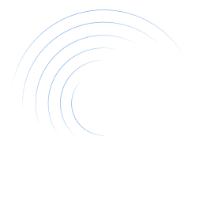

President
Simplify, Empower, Thrive!
Unleash image processing with Rovren
Rovren is an exceptional educational resource that simplifies image processing learning and teaching. It leverages OpenCV libraries to empower users with practical tools, expert tips, and comprehensive documentation. Whether you're a beginner or an experienced educator, Rovren caters to your needs, allowing you to delve into image processing confidently and enjoyably. With hands-on tools, valuable guidance, and reliable documentation, Rovren offers an immersive and rewarding experience in this captivating field.
